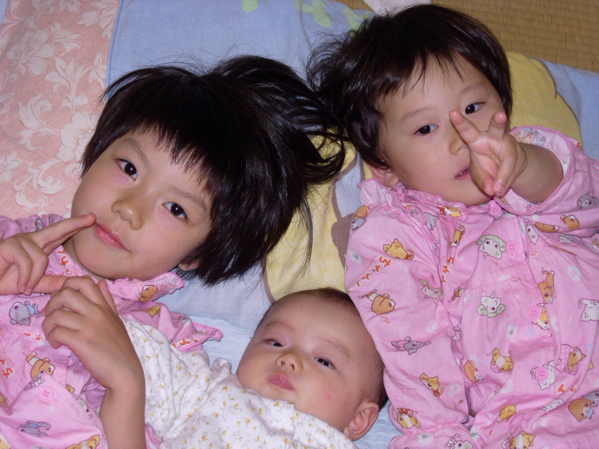
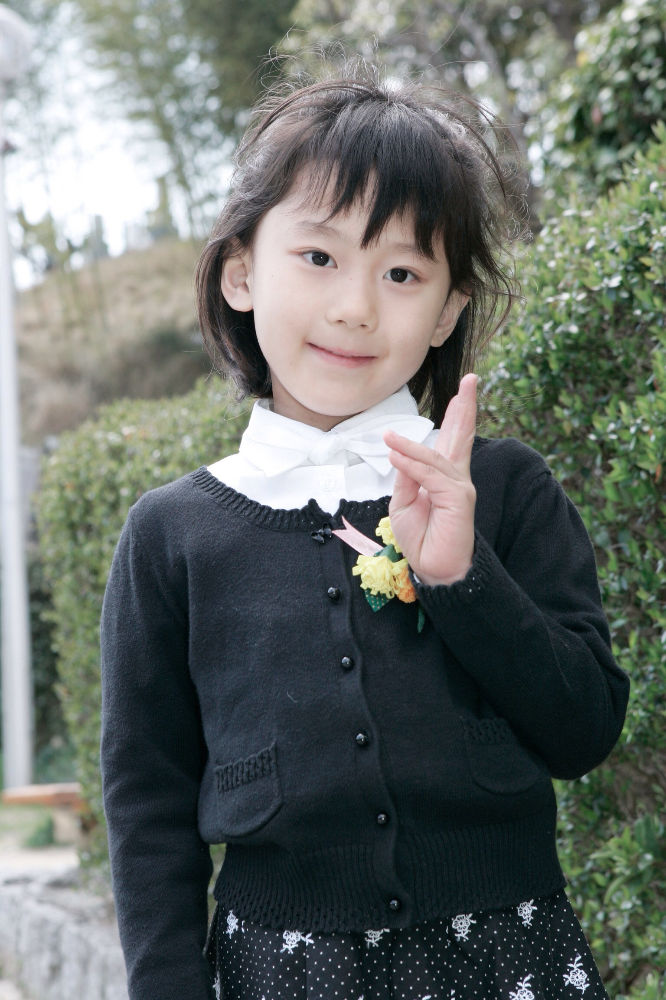
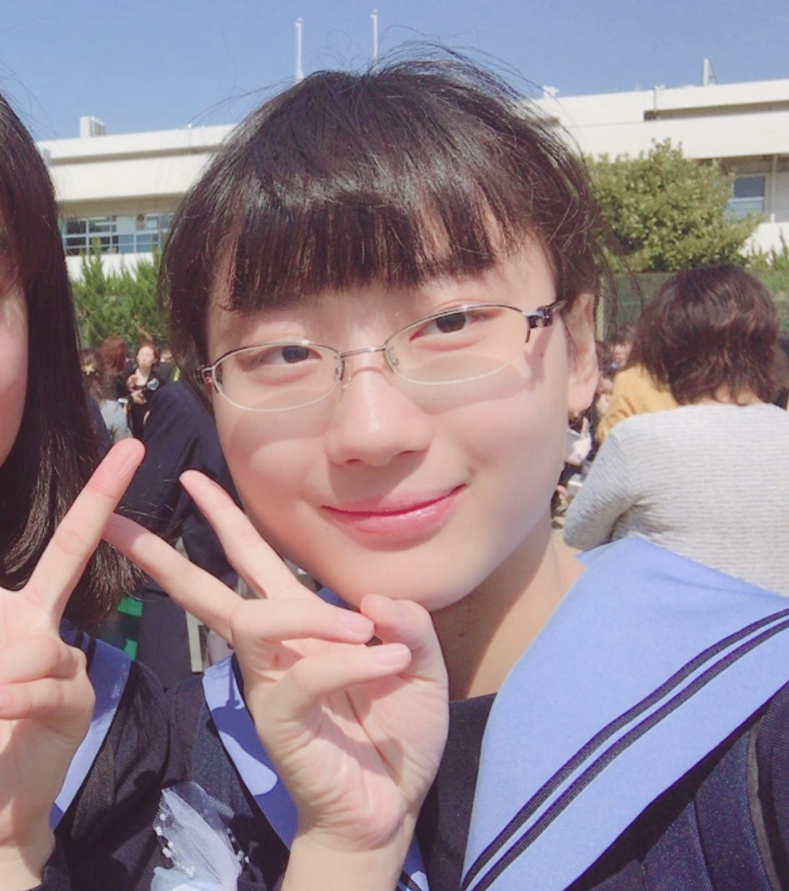
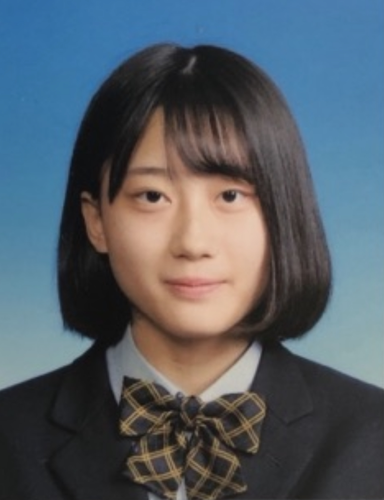
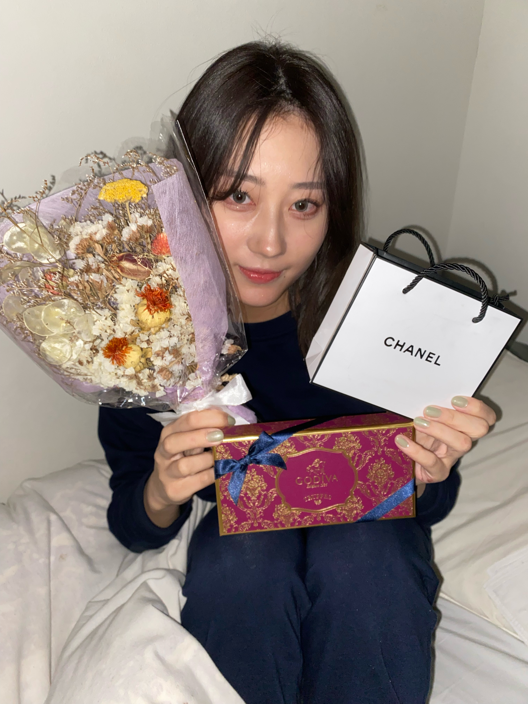

2002年12月22日に大阪府吹田市に生まれる。三姉妹の次女。
小さいころの私はマイペースで勇敢な子。
名前の由来。名前は愛に和と書く。あいでなごます。三姉妹全員に和が入っている。

千里第一小学校に入学。
引っ込み思案な子。学校で一言も発さずに帰宅など。
人見知り。保育園卒園後引っ越したため、小学校に知り合いがいない。姉にくっついて行動。

片山中学校に進学。
おとなしい性格。絵が得意だったため、美術部に所属。

追手門学院高校一類に進学。明るい友達に囲まれて少し明るくなる。
友達に誘われ野球部マネージャーになる。

京都女子大学家政学部生活造形学科に進学。建築士を目指す。
やさしい友達とゆったり過ごす。人類みな麺類プレミアム、マクドナルドでアルバイト。